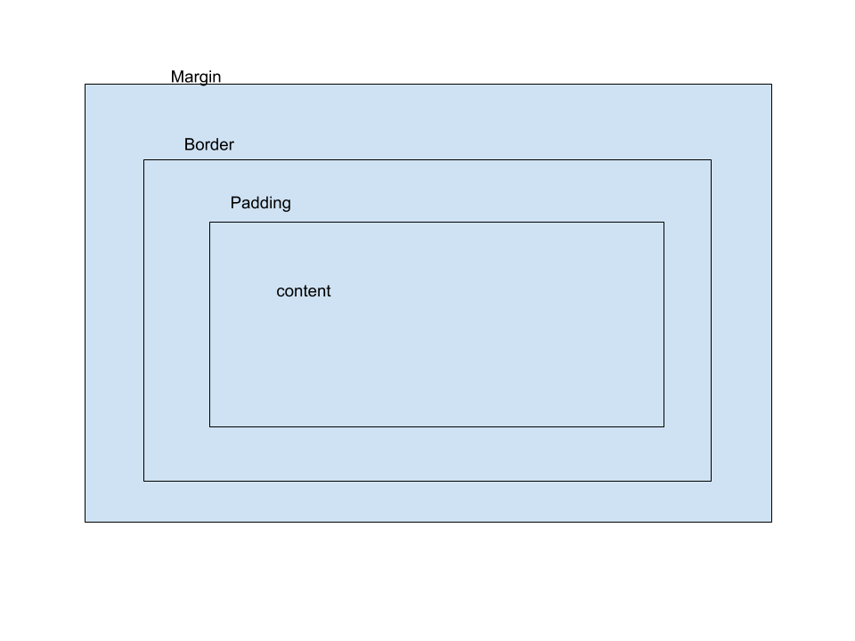

A short essay on what the Box Model is
A Box Model is all you can see on a page. It is built by using CSS. There is two types of boxes in CSS, block boxes and inline boxes. A model box contain several parts: content box, padding box, border box and merging box wich all have its specific role.
A diagram of the box model
Description 1
Description 2
Answers
- When two different margins of two different boxes collide, what we call collapsing margins happens and the bigger distance margin take the margin space.
- The formula is the standard css box model. It differs from using box-sizing:content box because it is the default on browser.
- display:inline-block allows to set width and height but dispaly inline doesn't.
display inline respect top and bottom margins or paddings whereas inline block doesn't.
display:block, there is a line break after the element but there isn't with inline and inline block values.